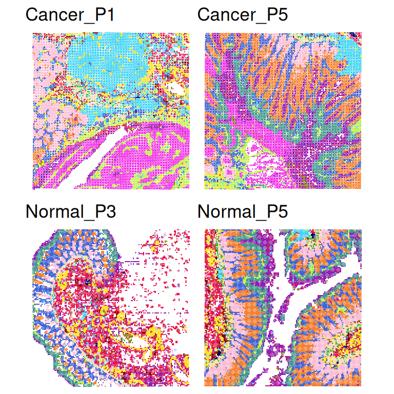
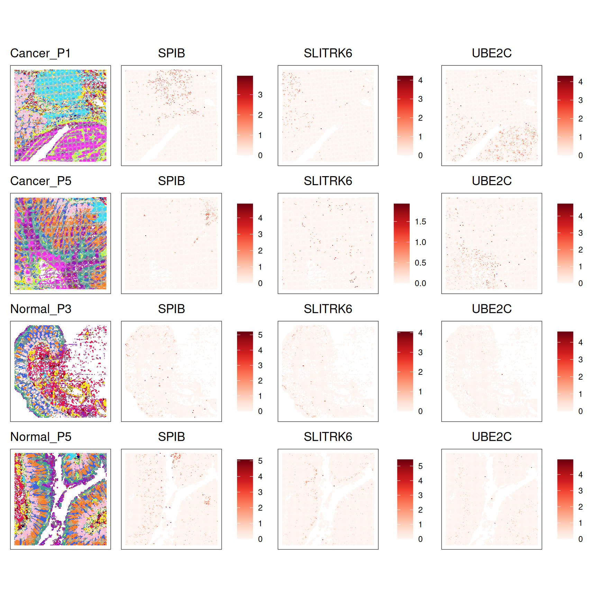
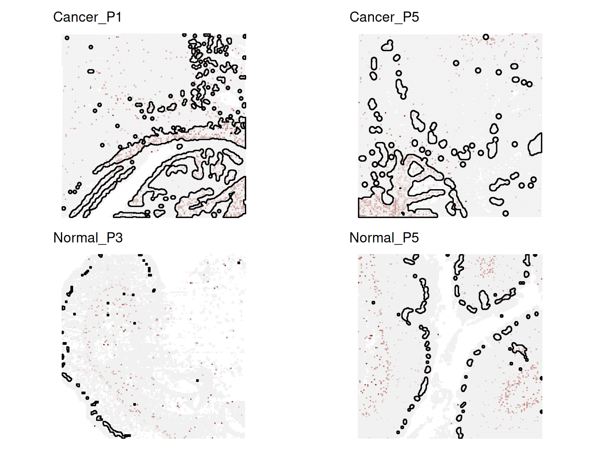

Exercise 7
Differential analysis with multi-sample
In this exercise, we extend our analysis to multi-sample, multi-condition spatial transcriptomics data. With multiple samples per condition (e.g., 2 colorectal carcinoma (CRC) and 2 normal adjacent tissues), we can ask not only:
“Is a gene spatially variable within a tissue?”
but also:
“Does its spatial pattern change between conditions?”
Genes showing such changes are called differential spatial patterns (DSP) genes. Using the DESpace package, we will learn how to identify such genes, that may be spatially variable in one condition but not in another, or it could be spatially variable in both conditions, but with different spatial patterns.
Learning Objectives
By the end of this exercise, you will be able to:
- Understand the concept of DSP
- Perform global DSP tests across multiple samples
- Perform individual-cluster tests to find cluster-specific DSP genes
- Interpret the DSP patterns
Libraries
Load preprocessed data
We will work with the same VisiumHD dataset from the human colon cancer study recently published. Here we use a subsetted dataset containing 4 slides from three patients (P1CRC, P5CRC, P3NAT, and P5NAT), representing either colorectal carcinoma (CRC) or normal adjacent tissues (NAT), all with pre-computed clusters.
spe <- loadHDF5SummarizedExperiment(dir="data/Human_Colon_Cancer_P1/", prefix="02.3_spe_tmp")
# Remove mitochondrial genes
gn <- rowData(spe)$Symbol
mt <- grepl("^MT-", gn, ignore.case = TRUE)
table(mt)mt
FALSE TRUE
18034 11 spe <- spe[!mt, ]
# Extract sample labels
sample_id <- colData(spe)[["sample_id"]]
# Create a sample indicator matrix
# Each column represents a sample; entries are 1 if the spot belongs to that sample
sample_mat <- model.matrix(~ sample_id - 1)
# Total counts of each gene in each sample
gene_counts <- counts(spe)
counts_per_sample <- gene_counts %*% sample_mat
# Number of non-zero spots per gene per sample
nonzero_per_sample <- (gene_counts > 0) %*% sample_mat
# Keep only genes that pass the filter in all samples
sel_matrix <- t(counts_per_sample >= 50 & nonzero_per_sample >= 20)
sel <- colMeans(sel_matrix) == 1
spe <- spe[sel, ]
# Normalization
spe <- scuttle::logNormCounts(spe)
speclass: SpatialExperiment
dim: 12114 56120
metadata(0):
assays(2): counts logcounts
rownames(12114): SAMD11 NOC2L ... TMLHE VAMP7
rowData names(3): ID Symbol Type
colnames(56120): s_016um_00145_00029-1.Normal_P5
s_016um_00165_00109-1.Normal_P5 ... s_016um_00122_00096-1.Normal_P3
s_016um_00127_00062-1.Normal_P3
colData names(6): row col ... sample_id sizeFactor
reducedDimNames(0):
mainExpName: NULL
altExpNames(0):
spatialCoords names(2) : pxl_col_in_fullres pxl_row_in_fullres
imgData names(4): sample_id image_id data scaleFactorcolData(spe) includes:
-
sample_id: sample ID -
condition: CRC vs. Normal tissue -
cluster: spatial domain labels
DataFrame with 3 rows and 6 columns
row col cluster condition
<integer> <integer> <factor> <factor>
s_016um_00145_00029-1.Normal_P5 145 29 3 Normal
s_016um_00165_00109-1.Normal_P5 165 109 9 Normal
s_016um_00188_00060-1.Normal_P5 188 60 10 Normal
sample_id sizeFactor
<factor> <numeric>
s_016um_00145_00029-1.Normal_P5 Normal_P5 2.413912
s_016um_00165_00109-1.Normal_P5 Normal_P5 3.020864
s_016um_00188_00060-1.Normal_P5 Normal_P5 0.742408table(spe$condition)
Cancer Normal
29064 27056 Visualize clusters for each sample.
samples <- sort(unique(spe$sample_id))
lapply(samples, \(.)
plotCoords(spe[, spe$sample_id == .],
annotate="cluster",
in_tissue=NULL,
point_size = 0.1) +
ggtitle(.)) |>
wrap_plots(nrow = 2) &
scale_color_manual(values=unname(pals::trubetskoy())) &
theme_void() &
theme(legend.position = "none")Scale for colour is already present.
Adding another scale for colour, which will replace the existing scale.
Scale for colour is already present.
Adding another scale for colour, which will replace the existing scale.
Scale for colour is already present.
Adding another scale for colour, which will replace the existing scale.
Scale for colour is already present.
Adding another scale for colour, which will replace the existing scale.
DESpace
Global test
To answer the question: does the expression of a gene change between conditions, but change differently for some domains compared to others?
DESpace::dsp_test() first aggregates spot- or cell-level counts into pseudobulk counts for each (sample, domain) combination, then tests whether the interaction term (condition x domain) in the model is different from zero.
Take few minutes to run. While it is running, take a look at the package vignette.
res_edgeR <- dsp_test(spe,
cluster_col = "cluster",
sample_col = "sample_id",
condition_col = "condition",
verbose = TRUE)Using 'dsp_test' for spatial variable pattern genes detection.Filter low quality clusters: Cluster levels to keep: 0, 2, 3, 4, 5, 6, 8, 9, 10, 11, 13, 14, 16, 17Design model: row names represent sample names, followed by underscores and cluster names. (Intercept) conditionNormal cluster_id10 cluster_id11 cluster_id13
Cancer_P1_0 1 0 0 0 0
Cancer_P5_0 1 0 0 0 0
cluster_id14 cluster_id16 cluster_id17 cluster_id2 cluster_id3
Cancer_P1_0 0 0 0 0 0
Cancer_P5_0 0 0 0 0 0
cluster_id4 cluster_id5 cluster_id6 cluster_id8 cluster_id9
Cancer_P1_0 0 0 0 0 0
Cancer_P5_0 0 0 0 0 0
conditionNormal:cluster_id10 conditionNormal:cluster_id11
Cancer_P1_0 0 0
Cancer_P5_0 0 0
conditionNormal:cluster_id13 conditionNormal:cluster_id14
Cancer_P1_0 0 0
Cancer_P5_0 0 0
conditionNormal:cluster_id16 conditionNormal:cluster_id17
Cancer_P1_0 0 0
Cancer_P5_0 0 0
conditionNormal:cluster_id2 conditionNormal:cluster_id3
Cancer_P1_0 0 0
Cancer_P5_0 0 0
conditionNormal:cluster_id4 conditionNormal:cluster_id5
Cancer_P1_0 0 0
Cancer_P5_0 0 0
conditionNormal:cluster_id6 conditionNormal:cluster_id8
Cancer_P1_0 0 0
Cancer_P5_0 0 0
conditionNormal:cluster_id9
Cancer_P1_0 0
Cancer_P5_0 0Check out the results:
- Extract gene-level results.
- Count how many DSP genes are significant at 5% FDR.
- Take the top 3 DSP genes and visualize their spatial expression across all samples using
ggspavis::plotCoords(). - How would you describe the spatial expression patterns of these genes? To help with interpretation, try looking up information about these genes (e.g., UniProt or the Human Protein Atlas) to get clues about which cell types or tissue domains they may highlight.
# Extract gene-level results
dsp_global <- res_edgeR$gene_results
head(dsp_global, 3) gene_id logFC.conditionNormal.cluster_id10
SPIB SPIB 3.3689574
SLITRK6 SLITRK6 3.6484273
UBE2C UBE2C 0.2558715
logFC.conditionNormal.cluster_id11 logFC.conditionNormal.cluster_id13
SPIB -6.016658 -0.3735427
SLITRK6 -5.108105 0.5387260
UBE2C 2.261431 -2.4736932
logFC.conditionNormal.cluster_id14 logFC.conditionNormal.cluster_id16
SPIB 6.123880 -5.8597462
SLITRK6 -6.574244 0.5313051
UBE2C 9.600026 -4.9771886
logFC.conditionNormal.cluster_id17 logFC.conditionNormal.cluster_id2
SPIB 0.4521503 -1.268746
SLITRK6 7.0643114 3.071577
UBE2C 4.0880357 1.087541
logFC.conditionNormal.cluster_id3 logFC.conditionNormal.cluster_id4
SPIB 1.132356 1.998761
SLITRK6 2.661016 1.201677
UBE2C 3.072440 3.234711
logFC.conditionNormal.cluster_id5 logFC.conditionNormal.cluster_id6
SPIB 5.175949 -0.5615506
SLITRK6 3.260155 2.2817234
UBE2C 1.428419 4.5269257
logFC.conditionNormal.cluster_id8 logFC.conditionNormal.cluster_id9
SPIB 3.1408068 2.290420
SLITRK6 5.4390033 -1.110038
UBE2C 0.2980652 4.314139
logCPM F PValue FDR
SPIB 5.873793 6.298689 4.064371e-07 0.004154844
SLITRK6 5.185589 5.909145 8.247322e-07 0.004154844
UBE2C 4.884226 5.953292 1.028936e-06 0.004154844# Count significant DSP genes (at 5% FDR significance level)
table(dsp_global$FDR <= 0.05)
FALSE TRUE
12102 12 [1] "SPIB" "SLITRK6" "UBE2C" plots <- lapply(samples, \(s) {
# Subset to sample s
spe_j <- spe[, spe$sample_id == s]
# Plot cluster
p_cluster <- plotCoords(
spe_j,
annotate = "cluster",
in_tissue = NULL,
point_size = 0.05,
legend_position = "none") +
ggtitle(s) +
scale_color_manual(values = unname(pals::trubetskoy()))
# Plots for each DSP gene
p_genes <- lapply(gs, \(g) {
plotCoords(
spe_j,
annotate = g,
point_size = 0.05,
in_tissue = NULL,
assay_name = "logcounts",
feature_names = "Symbol"
) +
scale_color_gradientn(colors = pals::brewer.reds(n=12))
})
# combine the cluster plot and 3 gene plots
c(p_cluster, p_genes)
})Scale for colour is already present.
Adding another scale for colour, which will replace the existing scale.
Scale for colour is already present.
Adding another scale for colour, which will replace the existing scale.
Scale for colour is already present.
Adding another scale for colour, which will replace the existing scale.
Scale for colour is already present.
Adding another scale for colour, which will replace the existing scale.
Scale for colour is already present.
Adding another scale for colour, which will replace the existing scale.
Scale for colour is already present.
Adding another scale for colour, which will replace the existing scale.
Scale for colour is already present.
Adding another scale for colour, which will replace the existing scale.
Scale for colour is already present.
Adding another scale for colour, which will replace the existing scale.
Scale for colour is already present.
Adding another scale for colour, which will replace the existing scale.
Scale for colour is already present.
Adding another scale for colour, which will replace the existing scale.
Scale for colour is already present.
Adding another scale for colour, which will replace the existing scale.
Scale for colour is already present.
Adding another scale for colour, which will replace the existing scale.
Scale for colour is already present.
Adding another scale for colour, which will replace the existing scale.
Scale for colour is already present.
Adding another scale for colour, which will replace the existing scale.
Scale for colour is already present.
Adding another scale for colour, which will replace the existing scale.
Scale for colour is already present.
Adding another scale for colour, which will replace the existing scale.plots_flat <- unlist(plots, recursive = FALSE)
wrap_plots(plots_flat, ncol = 4)
Individual domain test
The global test tells us which genes show different spatial patterns globally, but it does not tell us which clusters drive the differences.
To identify the key spatial domain where expression changes across conditions, we use DESpace::individual_dsp(), which performs domain-specific DSP tests.
# Focus on one cluster to decrease runtime in this exercise
spe$c8 <- factor(ifelse(spe$cluster == "8", 1, 0))
dsp_clu <- individual_dsp(spe,
cluster_col = "c8",
sample_col = "sample_id",
condition_col = "condition",
filter_gene = FALSE,
test = "LRT")Conducting tests for layer '0' against all other layers.Design model: row names represent sample names, followed by underscores and cluster names. (Intercept) conditionNormal cluster_id0
Cancer_P1_Other 1 0 0
Cancer_P5_Other 1 0 0
conditionNormal:cluster_id0
Cancer_P1_Other 0
Cancer_P5_Other 0Conducting tests for layer '1' against all other layers.
Design model: row names represent sample names, followed by underscores and cluster names. (Intercept) conditionNormal cluster_id1
Cancer_P1_Other 1 0 0
Cancer_P5_Other 1 0 0
conditionNormal:cluster_id1
Cancer_P1_Other 0
Cancer_P5_Other 0Returning results- Extract the 4th top DSP gene.
- Visualize its expression across samples via
ggspavis::plotCoords()orDESpace::FeaturePlot()and interpret the result.
# Select cluster id (because after binarization cluster 8 = "1")
id_clu <- "1"
# DSP results for cluster 8
head(dsp_clu[[id_clu]], 5) gene_id logFC logCPM LR PValue FDR
PTGER3 PTGER3 -11.169531 3.342487 29.29157 6.226599e-08 0.0007542903
OGN OGN -5.401620 5.400259 27.78484 1.355842e-07 0.0008212335
SIGLEC10 SIGLEC10 2.580773 5.693757 25.35995 4.756912e-07 0.0019208410
COL12A1 COL12A1 -2.520161 7.053918 24.58019 7.128088e-07 0.0021587414
PPP1R1B PPP1R1B -3.449097 7.789589 23.62477 1.170709e-06 0.0028363945# dsp_clu[["1"]] stores DSP genes for cluster 8 (after binarization)
# dsp_clu[["0"]] stores DSP genes for all other regions (not useful here)
# If full clusters are used originally, dsp_clu[["8"]] would store cluster 8 results
# Select the 4th top DSP genes
(gs <- rownames(dsp_clu[[id_clu]])[4])[1] "COL12A1"# Rotate slices
colData(spe) <- colData(spe) |> cbind(spatialCoords(spe))
spe$row <- spe$pxl_col_in_fullres
spe$col <- -spe$pxl_row_in_fullres
# Visualization
plots <- lapply(samples, \(.) {
# Subset sample
spe_j <- spe[, colData(spe)$sample_id == .]
# FeaturePlot for cluster 8
plot <- FeaturePlot(spe_j,
feature = gs,
coordinates = c("pxl_row_in_fullres", "pxl_col_in_fullres"),
cluster_col = "c8", # binary cluster column
cluster = "1", # plot on cluster 8
platform = "VisiumHD",
sf_dim = 400,
diverging = TRUE,
point_size = 0.05,
linewidth = 0.6) +
theme(legend.position = "right") +
labs(color = "") + ggtitle(.)
return(plot)
})Coordinate system already present.
ℹ Adding new coordinate system, which will replace the existing one.
Coordinate system already present.
ℹ Adding new coordinate system, which will replace the existing one.
Coordinate system already present.
ℹ Adding new coordinate system, which will replace the existing one.
Coordinate system already present.
ℹ Adding new coordinate system, which will replace the existing one.wrap_plots(plots, ncol = 2) + plot_layout(guides = 'collect') + ggtitle(gs)
In CRC samples, COL12A1 shows higher expression in cluster 8 and covers a larger region. In normal samples, its expression is weaker and more limited.
Cluster 8 might correspond to a stromal region that becomes expanded or remodeled in CRC. individual_dsp() helps identify which spatial domain shows condition-specific changes in gene expression.
Try running the individual domain test using the default setting test = "QLF. How do the results change? (Hint: check the number of significant genes.) Why might this happen?
Clear your environment:
Key Takeaways:
DSP genes capture changes in where a gene is expressed across conditions, not only how much.
dsp_test()identifies global DSP genes across all clusters and samples.individual_dsp()pinpoints which clusters (spatial domains) drive these differences.